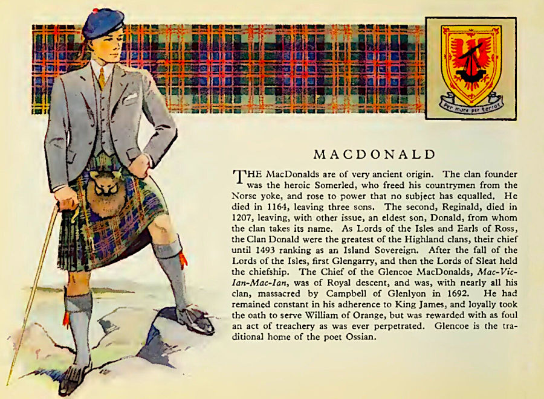
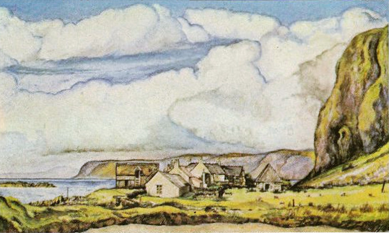
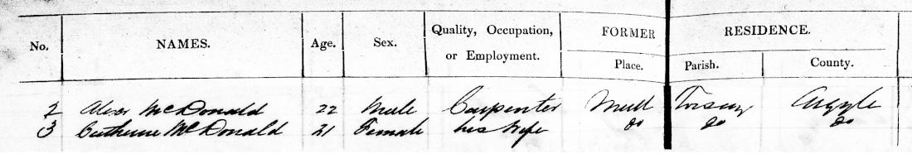
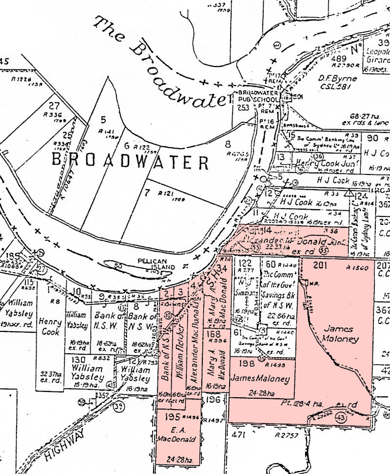

-
Any image can be clicked to see the full sized version. Click again to close it.
To print the page or search for any name, consider showing all the families first.
The McDonalds
variously written as McDonald, MacDonald, Mcdonald, Macdonald, McDonnell, Macdonnell etc.
Our family has a lot of McDonalds and the name John McDonald pops up all over the place.
Some examples are:
John McDonald m. Flora Kennedy (parents of » Catherine (McDonald) Halling)
John McDonald m. Elizabeth May (parents of » Alexander Duncan McDonald)
John McDonald m. Jessie McIntyre (parents of » Jessie (McDonald) Fenwick)
John McDonald m. Margaret Stamp
John McDonald m. Ethel Benson
John McDonald m. Elizabeth May Campbell
John McDonald m. Frances Chapman
John MacDonald (brother of Ernest Allen MacDonald)
John MacDonald m. Bridget Shea (grandparents of Ernest Allen, m. Mildred Pieper)

Norse Warrior from the Lewis Chessmen
Origins
Legend has it that the MacDonalds ultimately descend from Somerled (or Somhairlidh, d.1164), the Norse-Gaelic King of the western Scottish Isles, accredited with freeing the Gaelic people from their ancient Norse rule. This was achieved by Somerled declaring himself to be their new Gaelic ruler.He was in a good position to do that, as he was already their current Norse overlord.
The Red Book which tells the tale of Clan Donald
Somerled married Ragnhild, daughter of Óláfr Guðrøðarson, the King of Man. When Olaf died his son Godred, Somerled's brother-in-law, took over. This made everyone else rather unhappy. Consequently Thorfinn Ottarson, a Manx chief wanted Somerled's son Dugall to be the new king. Somerled set himself against Godred in a sea battle and as a result, the kindom was split in two; half for Godred, half for Dugall.
So Godred and Dugall took up running the place but they too couldn't settle on a peaceful existence and fought each other for supremacy. Dugall won out but that still didn't bring peace. There continued to be disputes over rightful patrilineal descendancy and ownership between Dugall and his brother Ranald. This brought about a further split.
Dugall's descendants included the Lords of Argyll and the Clan MacDougall. The descendants of Dugall's brother Ranald included the Lords of the Isles, Clan Donald, Clan MacRory, and Clan MacAlister. The MacDonalds of Clan Donald traditionally derive their name from the legendary son of Ranald (or Ragnhall) known as Donald (or Domhnall) who lived around 1192.
Map of MacDonald clans in Scotland
To complicate matters further, Somerled's wife, Ragnhild and her family also staked their matrilineal claims. As a result a lot of MacDonald clans sprang up alongside each other. Nevertheless there remained in all of them a certain feistiness that prevailed over most of western Scotland.
In the 15th century after innumerable battles with the kings of Scotland, the MacDonalds emerged as the Earls of Ross. But this glory was short lived when in 1475 James III stripped them of those titles and lands. As a final blow, James IV enforced forfeiture of all titles and claims to Lord of the Isles. The McDonalds swore allegiance to restore it. Many of them also took to fighting for the Jacobite cause.
Clan Donald, MacDonald or McDonell?
The variations in spelling of the surnames for the descendants of the clans are from many attempts over time at anglicising the original Gaelic forms. The Gaelic form of the patronymic name is MacDhòmhnaill, literally son of Dòmhnall.
There are a number of officially recognised branches of the clan, namely Clan MacDonald of Keppoch, Clan MacDonell of Glengarry, Clan Macdonald of Sleat, Clan Macdonald of Clanranald and Clan MacAlister.
Also deserving mention are historic branches such as Clan MacDonald of Dunnyveg, Clan MacDonald of Lochalsh, the MacDonalds of Glencoe, the MacDonalds of Ardnamurchan, and in Ireland there is also a cadet branch, the MacDonnells of Antrim.
For centuries, Clan Donald chiefs carried the title, Lord of the Isles. John of Islay (John MacDonald) was the fourth and last Lord of the Isles, the lordship having been terminated in 1493 by James IV. John was the son of Alexander of Islay, 3rd Lord of the Isles, Earl of Ross and his wife Elizabeth Seton the daughter of Alexander, Lord of Gordon and Huntly. Alexander and his forces had fought against the royalist army of James I at the battle of Lochaber in 1429 but was defeated and imprisoned. Two years later Alexander's cousin (or nephew) Dòmhnall Ballach Mac Dhòmhnaill took up the cudgel and lead the MacDonalds to victory at the battle of Inverlochy.
The Redshanks
In the early 16th century, after the demise of the clan's titles and rights, the MacDonalds were banished from their lands and rendered homeless and unemployed. Naturally they had to look for something else to keep them busy. Fighting was their specialty so many of them turned to mercenary work and joined the redshanks.
A Lochaber Axe
They were called that because they were renowned for being a rather rugged bunch, dressed in plaids with bare legs and bare feet yet still capable of wading through icy cold water, which naturally enough made their shanks go very red. They were armed to the teeth with a short bow, a two-handed claymore and a Lochaber axe. Later they adopted the targe, a single handed broadsword, and then the musket. Armed in that mannner, the redshanks could attack with a volley of gunshots and then charge with sword and targe.
As an extra bonus, in times of peace the Lochaber Axe could also also be employed as a scythe down on the farm. And the hook on the end made it handy to hang neatly on the barn wall.
With Birlinns, by Sea, by Land
The clan crest is encircled by the motto in Latin 'Per Mare - Per Terras',
or in Gaelic 'Air Muir s’Air Tir', or in English 'By Sea, By Land'. The crest was traditionally worn with a sprig of heather through it, reminiscing the battle cry of the clan, Fraoch eilean ('the heathery isle').
The motto recalls the legend of Somhairlidh (Somerled) who with 160 birlinns of his own invention, packed full with his armies, travelled “by sea” to make an assault “by land”. Somerled's birlinn was similar to the usual Norwegian longship but redesigned to be smaller and include a central rudder for greater ease of movement.

A Shipwright's Axe
Shipbuilding in their blood
A birlinn depicted in stone
in St Clement's Church, Harris
Necessarily to be a powerful sea faring nation, a lot of ships are needed. Next to fighting, shipbuilding was a major occupation of the MacDonalds. Wood is a must-have for shipbuilding and oak being the most durable was much sought after. The most favored source for that oak was Lochaber. The wood was so abundant there that the saying, "B'e sin fiodh a chur do Loch Abar" (bringing wood to Lochaber) was used if something was a pointless excercise.
Because no remains of a birlinn have ever been found, there can be no definite way of knowing what techniques were used in building them. Some scholars even doubt that traditional Norwegian methods were employed. The only sure thing is that they are no longer built. In more modern times, the eclipsing of wooden ship building by that of steam driven ships and a huge boat building industry with gargantuan shipyards further clouds investigation.
Clouds over Mull, by C. John Taylor
Alexander the Shipwright
So when it comes to our own McDonalds, to try to ascertain what a shipwright was in the nineteenth century on the Island of Mull, or even in Glasgow, is nigh on impossible. It would be like trying to take wood to Lochaber.
Nevertheless, Alexander Duncan McDonald at the ripe age of 22 when he migrated to Australia with his wife Catherine Gillies, listed himself as shipwright. Perhaps when he eventually turned his hand to farming he had already discovered that his profession was somewhat redundant. He still retained a lot of the McDonald feistiness and managed to channel it into fighting an endless battle against alcohol consumption as a member of the I.O.G.T. (Independent Order of the Good Templars).

1815, June 10th - Baptism of Alexander Duncan McDonald, son of John and Elizabeth, living in Old Tothill Street in the Parish of St. Margarets, Middlesex, London. John was a Private in the 11th regiment, Veterans. The veteran regiments were created to employ soldiers for administrative work who were no longer suited to front line combat.

Old Tothill Street, London, Leading to Westminster Abbey.
Even though Alexander Duncan McDonald was a Scottish highlander, or rather, islander, he was actually born in London. His father, John McDonald, a shipwright, was a private in the 11th Regiment Veterans, stationed in London. At the time when Alexander was born, John, and his wife Elizabeth May, lived in Old Tothill Street in the Parish of St. Margarets in Westminster. There was also a New Tothill Street which was originally called White Hart Street but the the one which remains till today is Old Tothill Street and now simply called Tothill Street, only a stones throw from Westminster Abbey. Alongside the Abbey is the Parish Church of St. Margarets where Alexander was baptised. The street is mentioned in "Westminster: Tothill Fields and Neighbourhood" by Edward Walford:
Depiction of the uniform of the 11th Regiment Foot, which would have been worn by Alexander's father, John McDonald.
Tothill Street, which extends to the Broadway from the Broad Sanctuary, near the west front of the Abbey, is the most ancient street in Westminster. It was at one time inhabited by noblemen "and the flower of the gentry.".
Old Tothill Street leading to Westminster Abbey, the Houses of Parliamant and the Thames.
Mysterious Dates and Ages
About 1837, Alexander married Catherine Gillies, the daughter of the Glasgow Innkeepers, Daniel and Christie Gillies. Catherine must have been about 16 at the time, for on her death certificate in 1856, she was said to be 35 or 36, which would make her born in either 1820 or 1821 and therefore 5 or 6 years younger than Alexander. That record also stated that she had been in New South Wales for 21 years. That would place her migration at 1835 but it was actually in 1837. On Alexander's death certificate, his marriage to Catherine lasted 17 years. Counting back from the date of her death in 1856, would place their marriage at 1839, two years after the married couple migrated.
Things get more perplexing when looking at their ages on the ship's records. When the newly married couple departed Greenock in July 1837, Catherine's age was listed as 21, not 16. Perhaps her age was "adjusted" to qualify her for bounty passage. A few months later, upon arrival in Sydney, she supposedly embarked at the age of 22. Then came the mystery of the block record of baptisms for three of their five children (John, Elizabeth and Catherine), all dated 11 September 1856, four months after Catherine died. It's possible that Alexander's second wife, Mary Ann Loaring, whom he married three months later, had a hand in it but why the other two children, Alexander and Mary, aren't recorded is also a mystery.
The ships Portland and Mid-Lothian both arrived in Sydney about the same time. They were carrying Scottish immigrant workers hand picked by Rev. Dr. John Dunmore Lang who was the major instigator of the Bounty system of assisted passage paid for by the New South Wales Government. Dr. Lang who supported the influx of skilled workers from the Scottish Highlands, was on board the Portland, the same ship that carried Alexander and Catherine, arriving on 3rd December 1837.1837 July 24 - Departure of the Portland from Greenock
with Alexander (22) and Catherine (21) on board

1837 Dec 3 - Arrival of Alexander (22) and Catherine (22)
It was his signature on the document vouching for Catherine's 'very good' character. Nine days later, on 12th December 1837, the Mid-Lothian, carrying another load of highlanders, this time mostly from the Isle of Skye arrived in Sydney. On board was none other than Rev William McIntyre, who had been pursuaded by Dr Lang to become a minister and travel to Australia. William McIntyre's nephew, Duncan later married Alexander's daughter Elizabeth. Four years later, Duncan's daughter, Jessie married Alexander's son, John.
1837 Dec 3 - Details of the Portland's records for Alexander and Catherine
A New Life in Australia
McDonald Land at Broadwater

Richmond River District
(Wardell was formerly known as Blackwall)
(Woodburn was formerly known as Rocky Mouth)

Alexander Duncan McDonald

Alexander Duncan McDonald
Alexander Duncan McDonald
and Catherine Gillies (1st wife)
and Mary Ann Loaring (2nd wife)
From the time Alexander and Catherine arrived in New South Wales in 1837, up until settling in the Richmond River district sometime in the 1850s, their life remains a mystery. According to the baptismal records of the children, Alexander took to being a sawyer, presumably felling timber for the booming industry of supplying rare woods such as cedar to England. At that time they were living in Blackwall, later known as Wardell. That part of Alexander's life ended in 1856, when Catherine died in childbirth and Alexander remarried a few months later, this time to an English woman, Mary Anne Loaring, who had arrived in the colony in 1855 to help her sister with her family.
From The Book, Broadwater Public School 1881 – 1981 by Mrs Molly Fischer (descendent of Mary Anne McDonald):
My grandfather, Alexander Duncan McDonald, came to Australia from the Isle of Mull in 1837 and arrived on the Richmond in the 1860’s. He worked as a shipwright at Lismore for a time. On a trip by rowing boat to Ballina for supplies, he and his wife Maryanne were caught in a storm and forced to take shelter near the bank at Monti’s creek. Their boat was swamped so they decided to camp there for a few days. The creek area was ideal for for building and launching boats. As the timber, mostly cedar, was plentiful, McDonald selected all the land in the vicinity. He eventually grew cane. His first crop was harvested and crushed by the C.S.R. Co. in 1881. (The original agreement between him and the company is in the Lismore Historical Society). Alexander’s sons, James and Richard McDonald, farmed the original selection well into this century. His eldest son Alexander, selected most of the land on which the sugar mill now stands. After selling to the company he went to Sydney and remained there. Before Broadwater was officially named, it was called Macdonaldtown.» Alexander Duncan McDonald (10.06.1815 – 18.09.1888)
married his first wife Catherine Gillies (about 1821 – 30.05.1856)
in Glasgow, c1837
and they had the following children:
Alexander McDonald 02.07.1841 –
*Sydney28.04.1883
†Broadwaterm. Isabella Campbell Heugh in Pimlico, 15.10.1868 John McDonald 07.09.1843 –
*Blackwall??.??.1901
†Wardellm. Jessie Halling McIntyre in Wardell, 17.07.1879 Elizabeth May McDonald 23.11.1848 –
*Blackwall24.08.1913
†Rydem. Duncan McIntyre in Broadwater, 19.05.1875 Mary McDonald 19.06.1850 –
*Rocky Mouth (Woodburn)30.06.1932
†Sydneym. Augustus Frederick Dewing Robins in Broadwater, 18.11.1868 Catherine Hannah McDonald 01.10.1853 –
*Blackwall21.06.1895
†Richmond Riverm. Henry Alexander Robins in Wardell, 29.07.1872 » Alexander Duncan McDonald (10.06.1815 – 18.09.1888)
Mary Ann Loaring
married his second wife Mary Ann Loaring (03.11.1831 – 04.12.1917)
in Richmond River, 22.12.1856
and they had the following children:
Duncan McDonald 26.05.1858 –
*Blackwall (Wardell)??.??.1912
†Murwillumbahstatus unknown Flora Jane McDonald 24.05.1860 –
*Wardell (Blackwall)02.04.1948
†15 Kelsey Street, Arncliffem. Robert John Kirk Lindsay in Broadwater, 1891 James Campbell McDonald ??.??.1862 –
*Tabulam??.??.1867
†Richmond River(5 years old) Isabella McDonald 15.02.1865 –
*Broadwater02.06.1948
†Coffs Harbourm. William Fletcher in South Woodburn, 1896 Letitia Campbell McDonald 24.06.1867 –
*Richmond River29.11.1958
†Ballinam. James Maloney in Broadwater, 10.11.1890 Agnes Ella McDonald ??.??.1871 –
*Broadwaterabt 1951
†Bankstownm. Francis George Benson in Ballina, 1892
m. Matthew Marsden in Broadwater, 31.10.1901James Harold (Henry Joseph) McDonald 23.03.1874 –
*Richmond River03.07.1963
†Broadwaterm. Alice Lillian Osborne in Broadwater, 06.02.1911 Richard Henry McDonald 27.01.1877 –
*Wardell23.10.1950
†Ballinam. Esther Edith Agnes Tyrrell in Nowra, 03.03.1909

1868-10-15 Marriage of Alexander McDonald to Isabella Heugh

1868-11-18 Marriage of Mary McDonald to Augustus Robins


Alexander and Catherine had five surviving children when Catherine died. Although Catherine was said to have died in childbirth there isn’t a record of that child and there is no record of the deaths of any other of the 5 deceased children . On Alexander’s death certificate it lists “5 boys dead” (- Trevor Lindsay).

Children of the First Marriage
Alexander McDonald
and Isabella Campbell Heugh
» Alexander McDonald (02.07.1841 – 28.04.1883)
married Isabella Campbell Heugh (03.11.1847 – ??.??.1927)
in Pimlico, 15.10.1868
and they had the following children:
Catherine McDonald 24.09.1869 –
*NSW01.05.1870
†NSW(8 months old) Elizabeth Flora McDonald 10.07.1871 –
*Richmond River??.??.1947
†Ballinam. John Johnston in Ballina, 14.03.1900 Alexander McDonald 22.06.1873 –
*Richmond River1902
†unknownstatus unknown Isabella Mary Campbell McDonald ??.??.1875 –
*Wardell26.10.1920
†Murwillumbahm. George John Attewell in NSW, 1897 William McDonald 12.05.1877 –
*Casinounknown
†unknownstatus unknown Lily Agnes McDonald 29.12.1878 –
*Richmond River04.01.1879
†Richmond River(6 days old) John Gillies McDonald 09.03.1880 –
*Richmond River23.10.1881
†Richmond River(17 months old) Elizabeth Mary McDonald 15.02.1882 –
*Lismore15.09.1884
†Lismore(2 years old) Robert J. McDonald 23.10.1883 –
*Lismore1892
†Ballina(9 years old)

Jessie Halling McIntyre

John McDonald
John McDonald
and Jessie Halling McIntyre
» John McDonald (07.09.1843 – ??.??.1901)
married Jessie Halling McIntyre (??.??.1860 – 10.01.1911)
in Wardell, 17.07.1879
and they had the following children:
Isabel McDonald ??.??.1880 –
*Meerschaum Vale?.?.~1901
†Ballina(unmarried) Elizabeth May McDonald 01.04.1882 –
*Meerschaum Vale10.09.1927
†Five Dockm. John Joseph Carroll in Wardell, 06.02.1902 Jessie Halling McDonald 09.07.1884 –
*Meerschaum Vale05.07.1965
†Caloundram. Frederick Robert Fenwick in Alstonville, 28.02.1906 Duncan McDonald ?.?.? –
*Meerschaum Vale12.07.1956
†Kensington VICm. Dora Mullett in Victoria, 1911 Geraldine McDonald ??.??.1887 –
*Meerschaum Vale12.01.1967
†St Leonardsm. Vincent Ignatius Moye in Pyrmont, 21.10.1914 John Gillies McDonald 17.08.1889 –
*Meerschaum Vale12.09.1939
†Ballinam. Margaret Stamp in Lismore, 16.03.1921 Flora Agnes McDonald 18.09.1891 –
*Meerschaum Vale6.06.1997
†Collaroy Plateaum. Reginald Norman Wellings in Manly, Jan 1921 Angus McDonald ??.??.1893 –
*Ballina11.02.1979
†NSWm. Linda Ethel Barnier in Grafton, 21.03.1923 Lorene Violet McDonald ??.??.1895 –
*unknown09.11.1990
†unknownm. Robert Clifford Caddell in Casino, 13.08.1919 Francis Federal Aubrey Arthur McDonald ??.??.1898 –
*Ballina24.07.1971
†Granvillem. Evelyn Rose Boal in Victoria, 1923
Elizabeth May McDonald
and Duncan McIntyre
» Elizabeth May McDonald (23.11.1848 – 24.08.1913)
married Duncan McIntyre (25.06.1830 – 15.09.1917)
in Broadwater, 19.05.1875
and they had the following children:
Clarence Duncan McIntyre 15.02.1876 –
*Wardell01.07.1946
†Kogarahm. Annie May West in Balmain South, 1898 Elizabeth McDonald McIntyre 14.02.1878 –
*Wardell17.01.1950
†Rose Baym. Michael Thomas Morris in Wardell, 02.07.1898 Eliza Clinton Neild McIntyre 22.05.1879 –
*Ballina21.04.1961
†Sydneym. Thomas Mulhearn in Ballina, 1898 Joanna Campbell McIntyre ??.??.1880 –
*Wardell31.12.1951
†Brisbanem. William Rudgley in Ballina, 1898 Eglantine Balfour McIntyre 26.04.1883 –
*Wardell26.04.1915
†Balmainstatus unknown Malcolm McKinnon Campbell McIntyre 01.10.1885 –
*Wardell19.09.1944
†Brighton-Le-Sandsm. Lorna Louise Gunter in Rockdale, 1921 Alexander Duncan McIntyre 07.07.1886 –
**Wardell13.07.1886
†unknownstatus unknown Clara Georgina McIntyre 18.07.1887 –
*Wardell02.03.1954
†North Sydneym. William Frayling Talbot in Sydney, 1917 Olive Rachel McIntyre 06.07.1889 –
*Wardell22.06.1972
†Saint Leonardsm. Ernest James Cochrane in Sydney, 18.08.1928 Roderick Dhu McIntyre 15.12.1891 –
*Randwick24.12.1927
†North Sydneym. Constance Edith Jackson in North Sydney, 03.08.1918
Mary McDonald
and Augustus Frederick Dewing Robins
» Mary McDonald (19.06.1850 – ??.??.1932)
married Augustus Frederick Dewing Robins (17.04.1840 – 25.12.1902)
in Broadwater, 18.11.1868
and they had the following children:
Lily Marion Robins ??.??.1871 –
*Richmond River?.?.~1930
†unknownstatus unknown Herbert John Robins 19.03.1874 –
*Richmond Riverunknown
†unknownstatus unknown Charles Richmond Robins 28.07.1876 –
*Casino27.08.1926
†West Wyalongm. Amanda Priscilla Gallimore in Randwick, 1911 Helen Isabel ROBINS 13.12.1878 –
*Richmond River18.07.1945
†Burwoodm. Harold Luscombe Street in Sydney, 17.04.1901 Walter William Robins 05.05.1881 –
*Lismoreunknown
†unknownm. Edith Isabella in Randwick, 1911 Mary Mabel F. Robins ??.??.1883 –
*Lismoreunknown
†unknownstatus unknown
Catherine Hannah McDonald
Catherine Hannah McDonald
and Henry Alexander Robins
» Catherine Hannah McDonald (01.10.1853 – 21.06.1895)
married Henry Alexander Robins (17.05.1845 – 29.08.1933)
in Wardell, 29.07.1872
and they had the following children:
Minnie Helen Robins 20.08.1873 –
*Broadwater29.07.1962
†Qldm. Ephraim Joseph Sneesby in Empire Vale, 15.11.1894 Anna May Robins ??.??.1874 –
*Broadwater08.07.1950
†Ballinam. Charles Edward Hermann in German Creek, 15.01.1896 Duncan Albert Robins 04.07.1876 –
*Broadwater09.01.1946
†Lismorem. Ada Jane Ellis in Empire Vale, 28.02.1900 Elizabeth Marion Robins ??.??.1878 –
*Broadwater district17.07.1950
†Lismorem. James William Currie in Ballina, 1902 Jessie Maud Robins ??.??.1880 –
*Richmond River03.03.1926
†Lismorem. Leonard Joseph Jurd in Alstonville (reg 905)., 18.03.1908 Violet Alexandria Robins ??.??.1881 –
*Broadwater27.04.1960
†unknownm. David James Johnston in Alstonville, 30.11.1909 Clarence Duncan McIntyre Robins 15.04.1883 –
*Ballina??.10.1958
†Sydneym. Maud Matilda McIntyre in Wardell, 26.05.1909
m. Lillian Isabel Benson in Ballina, 12.12.1914Ernest Victor Robins ??.??.1884 –
*Lismore28.03.1918
†Londonm. Clara Lister in Qld, 12.01.1913 Eileen Beryl Robins 06.02.1884 –
*Empire Vale16.12.1986
†unknownstatus unknown Phoebe Beatrice Robins 12.06.1885 –
*Empire Vale??.??.1968
†unknownm. Hubert Ross Byrnes in Ballina (9090), 1912 Edith Grace Robins 29.07.1886 –
*Empire Vale09.08.1982
†unknownm. William Thomas Johnston in Ballina (8480), 1911 Cyril Alexander Robins ??.02.1888 –
*Empire Vale10.01.1905
†Rousstatus unknown Ruby Grace Robins ??.??.1889 –
*Empire Vale25.06.1970
†unknownm. John Raymond Crofton in Alstonville, 05.03.1913 Angus Bruce Robins ??.??.1890 –
*Ballina14.11.1915
†unknownstatus unknown Annie Pearl Robins ??.??.1891 –
*Empire Vale11.10.1989
†Alstonvillem. Herbert Reinhardt Bulwinkle in Alstonville, 09.08.1916 Gilbert Frederick Robins 18.12.1892 –
*Empire Vale17.03.1970
†Sydneym. Olga de Vere Shepherd in Lismore, 08.03.1919 Claude Reginald Robins 18.12.1892 –
*Empire Vale??.02.1893
†Empire Vale.status unknown
Children of the Second Marriage
Flora Jane McDonald
and Robert John Kirk Lindsay
» Flora Jane McDonald (24.05.1860 – 02.04.1948)
married Robert John Kirk Lindsay (??.??.1855 – 11.07.1911)
in Broadwater, 1891
and they had the following children:
Agnes Loaring May Lindsay ?.?.? –
*unknownunknown
†unknownm. Harold Chant in Arncliffe, 28.09.1935 George Angus Lindsay ??.??.1891 –
*Lismore??.??.1970
†Casinom. Mary Eliza J. Irish in Annandale, 1928 William Richard Lindsay ?.?.~1894 –
*Richmond River??.??.1935
†unknownm. Mary Miles Robert Leslie Lindsay ??.??.1896 –
*Lismore??.??.1989
†Lismorem. Mona Verena Campbell in Lismore, 1913
m. Pearl Juanita Speer in Bangalow, 08.12.1926Alfred John Lindsay ??.??.1902 –
*Casino??.??.2002
†Woodburnm. Hazel Jean Hewitt in Lismore, 1942
Isabella McDonald
and William Fletcher
» Isabella McDonald (15.02.1865 – 02.06.1948)
married William Fletcher (01.06.1859 – 21.06.1939)
in South Woodburn, 1896
and they had the following children:
George William Fletcher ?.?.? –
*unknownunknown
†unknownstatus unknown Loring Jane Fletcher ??.??.1897 –
*Casino03.01.1965
†Coffs Harbourm. Leslie Ernest Rippon in Broadwater, 30.04.1919
Letitia Campbell McDonald
and James Maloney
» Letitia Campbell McDonald (24.06.1867 – 29.11.1958)
married James Maloney (17.09.1858 – 29.07.1939)
in Broadwater, 10.11.1890
and they had the following children:
Reginald Alexander Maloney ?.?.? –
*unknownunknown
†unknownm. Myrtle Eileen Hewitt in Wyrallah, 21.11.1934 Birdie Maloney ?.?.? –
*unknownunknown
†unknownstatus unknown Claude Angus Maloney 04.06.1891 –
*Broadwatertuesday 9.10.1917
†Francestatus unknown Letitia Maloney 18.11.1894 –
*Broadwater27.05.1967
†unknownstatus unknown Harold James Maloney 28.01.1897 –
*Broadwater09.09.1963
†Ballinam. Theresa Mercia Cupitt in Ballina, 26.04.1933 Marion May Maloney 16.04.1899 –
*Broadwater16.02.1970
†unknownstatus unknown Donald Maloney 18.05.1901 –
*unknownunknown
†unknownm. Jones Doris Campbell Maloney 23.07.1903 –
*Broadwater07.08.1966
†unknownstatus unknown

Matthew Marsden

Agnes Ella McDonald
Agnes Ella McDonald
and Francis George Benson (1st husband)
and Matthew Marsden (2nd husband)
» Agnes Ella McDonald (??.??.1871 – abt 1951)
married Francis George Benson (??.??.1866 – 17.12.1897)
in Ballina, 1892
and they had the following children:
Lillian Isabel Benson 12.04.1894 –
*Wardell30.07.1970
†unknownm. Clarence Duncan McIntyre Robins in Ballina, 12.12.1914 George Arthur Benson 08.11.1896 –
*Broadwater14.11.1980
†unknownm. Henrietta May Hayes in Sydney, 1929
» Agnes Ella McDonald (??.??.1871 – abt 1951)
married Matthew Marsden (??.??.1854 – 07.07.1936)
in Broadwater, 31.10.1901
and they had the following children:
Stewart Marsden ?.?.? –
*unknownunknown
†unknownstatus unknown Ethel Bartholomew Marsden 28.12.1902 –
*Broadwater18.12.1969
†Canberram. William James Burvill in Annandale, 1928 Charles William Marsden 16.11.1904 –
*Broadwater02.10.1990
†Gympiem. Winifred Mary Burvill in Bankstown, 1930 Norman Stuart Angus Marsden 11.11.1906 –
*Broadwater04.02.1994
†Sydneym. Alma Ann Ingram in North Sydney, 1928 Hazel Heather Jean Marsden 06.06.1912 –
*Broadwater09.01.1950
†Sydneym. Wallace Richardson Hunt Smith in Hurstville, 1936 Lenora Hope Marsden 15.05.1916 –
*Casino13.10.2003
†Lidcombem. William Frederick "Fred" Wadsworth in Hurstville, 1938
James Harold McDonald and Alice Lillian Osborne
James Harold McDonald
and Alice Lillian Osborne
» James Harold McDonald (23.03.1874 – 03.07.1963)
married Alice Lillian Osborne (15.03.1893 – 08.08.1978)
in Broadwater, 06.02.1911
and they had the following children:
Sadie May McDonald ??.??.1912 –
*unknownunknown
†unknownstatus unknown Mary Anne McDonald ??.??.1914 –
*unknown??.??.2012
†unknownstatus unknown James William McDonald ??.??.1916 –
*unknown??.??.1996
†unknownstatus unknown Claude Angus McDonald ??.??.1919 –
*unknown??.??.1993
†unknownstatus unknown Alan Duncan McDonald ??.??.1928 –
*unknown??.??.2010
†unknownstatus unknown Helen McDonald ??.??.1933 –
*unknown??.??.1933
†unknownstatus unknown

Richard Henry McDonald and Esther Edith Agnes Tyrrell
Richard Henry McDonald
and Esther Edith Agnes Tyrrell
» Richard Henry McDonald (27.01.1877 – 23.10.1950)
married Esther Edith Agnes Tyrrell (02.02.1879 – 08.12.1984)
in All Saints' Church, Nowra, 03.03.1909
and they had the following children:
Melva Elizabeth McDonald 13.04.1910 –
*Broadwater??.06.2010
†Casinom. Francis Ambrose Johnston in Broadwater, 26.08.1936 Alexander James McDonald 24.07.1911 –
*Broadwater??.02.1985
†Lismorem. Eva Elsie Elliott William Richard McDonald 12.12.1913 –
*Broadwater??.??.2004
†Corakistatus unknown Flora Esther McDonald 09.04.1915 –
*Broadwater??.??.2007
†Tweed Headsstatus unknown Hilton George McDonald 11.10.1917 –
*Broadwater06.02.1981
†South Gundarimbastatus unknown Daphne Isabel McDonald 09.04.1921 –
*Broadwater??.05.1961
†Lismorem. Stuart Wareham